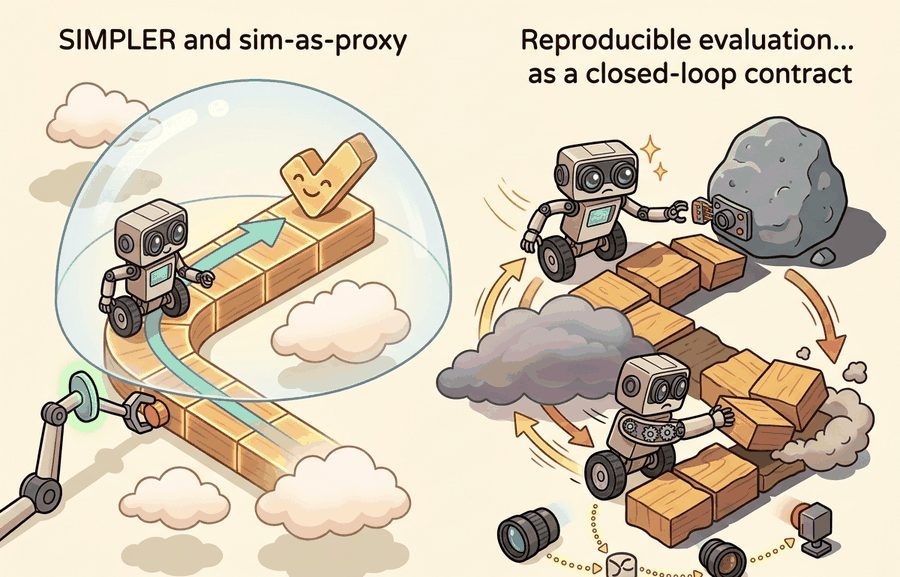
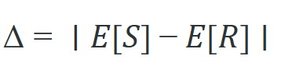
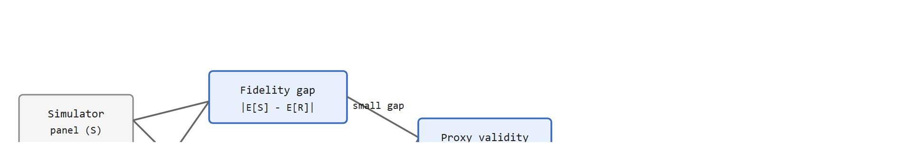

For Reproducible evaluation: SIMPLER and sim-as-proxy, a benchmark conclusion survives reruns only when the panel, seed policy, exclusion rules, and raw episode artifacts are inspectable.
An Evaluation Methodologist
A robotics team runs ten thousand simulated grasps overnight, ships the top-ranked policy, and watches it fail in the warehouse because the simulator never captured table-surface friction correctly. The ranking looked solid; the proxy was broken. As embodied AI scales to real deployments, the cost of a corrupted benchmark is not a bad paper score but a grounded fleet. SIMPLER (a simulated manipulation benchmark whose tasks are matched to real-robot setups, introduced by Li et al., 2024, and detailed later in this section) and the broader sim-as-proxy discipline give you a concrete protocol: build a matched real panel, measure rank correlation and failure-mode overlap, and draw a clear line between what the simulator can decide and what only physical evidence can settle. By the end of this section you will be able to compute a fidelity gap and a Spearman rank correlation on a matched sim/real panel, read a per-task-family proxy-validity table like the one SIMPLER publishes, and state which decisions your own simulator is (and is not) licensed to support.

This section assumes familiarity with the sim-to-real gap concepts introduced in section 20.3, particularly how domain randomization and dynamics mismatch affect policy transfer. The fidelity-gap metric and proxy-validity table developed here feed directly into section 52.6 on benchmark hygiene, where the same matched-panel discipline is applied to real-robot leaderboard design. Readers working on fleet-scale deployment will find these ideas revisited in Part XII alongside runtime monitoring and anomaly detection.
Two policies can post identical average success rates in the simulator and still send opposite recommendations to the deployment team, because the simulator ranked them in the wrong order and nobody checked. Evaluation choices rewrite the scientific claim: if the metric drops time, energy, or safety terms that the deployment team cares about, the benchmark no longer matches the real decision. Figure 52.5.1 frames this as a sim-to-real evaluation ladder: a simulator panel is a useful proxy only when its limits are named rather than ignored.
Let $S$ be the simulator score and $R$ the real-world score over matched tasks. A practical proxy check is the fidelity gap

plus a rank correlation between methods over the same task panel. A low average gap without rank preservation is still a weak proxy.The fidelity gap matters in embodied AI because physical consequences scale with systematic bias. A simulator that consistently inflates grasp success by 15 percentage points pushes teams to ship policies that fail on real hardware. Those failures carry costs ranging from dropped objects to joint torque faults that require a manual reset. A small $\Delta$ does not mean the proxy is safe. It means the absolute scores are close, which is a different and weaker claim than trusting the ranking. Figure 52.5.2 lays out the two-check pipeline that separates these claims: the fidelity gap and the rank correlation are computed independently, and proxy validity requires both to pass. The rank correlation check in the figure uses the Spearman coefficient (rho, a value between -1 and 1 measuring how consistently two rankings agree, walked through step by step later in this section); for now it is enough to know that rho close to 1 means the simulator and the real panel agree on which policy is best, and rho near 0 means they do not.

A policy that works in simulation but fails on hardware is not a policy: it is a wishlist backed by a flawed mirror.
To estimate $\Delta$, run the same evaluation episodes in both domains. $\mathbb{E}[S]$ is the mean success rate across episodes and seeds in the simulator. $\mathbb{E}[R]$ is the mean over a matched real panel that uses the same task definitions, object instances, and success criteria. Matched means the episode start states, object poses, and scoring thresholds align across both domains. Any remaining difference then reflects the simulator, not protocol drift.
A simulator is not validated by looking plausible. It is validated when the same ranking, failure modes, or sensitivity trends survive on the matched real panel often enough to support the intended decision.
A simulator may preserve policy ranking on tabletop grasping but fail to preserve contact-rich insertion errors because friction and compliance are mis-modeled. That makes it a good filter for broad candidate screening but a weak final judge for insertion policies.
sim_scores = {"A": 0.84, "B": 0.76, "C": 0.72}
real_scores = {"A": 0.68, "B": 0.70, "C": 0.61}
ranking_sim = sorted(sim_scores, key=sim_scores.get, reverse=True)
ranking_real = sorted(real_scores, key=real_scores.get, reverse=True)
mean_gap = round(sum(abs(sim_scores[k] - real_scores[k]) for k in sim_scores) / len(sim_scores), 3)
print({"ranking_sim": ranking_sim, "ranking_real": ranking_real, "mean_gap": mean_gap}){'ranking_sim': ['A', 'B', 'C'], 'ranking_real': ['B', 'A', 'C'], 'mean_gap': 0.11}sim_scores and real_scores into two ranked lists and printing the A-B inversion alongside a 0.11 mean gap, making proxy failure visible even when the average difference looks moderate.Expected output: The proxy loses trust here because the best simulator method is not the best real-world method. The mean gap alone would miss that decision-level failure.
Trace the proxy audit with the three policies above. Sim scores rank them A (0.84), B (0.76), C (0.72), giving sim ranks A=1, B=2, C=3. Real scores rank them B (0.70), A (0.68), C (0.61), giving real ranks B=1, A=2, C=3. Now line up the rank pairs per policy: A=(1,2), B=(2,1), C=(3,3). The rank differences are d(A)=1-2=-1, d(B)=2-1=+1, d(C)=3-3=0, so the squared differences are 1, 1, 0 and sum to 2. With n=3 policies, Spearman rho = 1 - (6 * sum d^2) / (n * (n^2 - 1)) = 1 - (6 * 2) / (3 * 8) = 1 - 12/24 = 1 - 0.5 = 0.5. A rho of 0.5 sits well below the 0.7 threshold, so the verdict is "restrict to screening" even though the mean gap of 0.11 looked tolerable: the single A-B inversion alone drags the correlation down to a value that fails the audit.
Use scipy.stats.spearmanr rather than Pearson correlation when auditing proxy validity: Spearman measures rank agreement, which is what matters for method selection decisions, and it is insensitive to the systematic score inflation that simulators almost always introduce. A Spearman rho below 0.7 on your matched panel is a clear signal to restrict the simulator to candidate screening only, not final ranking. Compute the p-value too; with fewer than ten methods in the panel, a rho of 0.8 can still be statistically insignificant and should be reported as such.
SIMPLER-style infrastructure, benchmark manifests, and replay artifacts help because they enforce matched schemas across simulation and real execution. The library advantage is standardization, not automatic transfer.
SIMPLER-style sim-as-proxy evaluation needs a correlation audit, not just a simulator score. Pandas aligns simulated and real episodes, SciPy estimates rank agreement and uncertainty, DVC (Data Version Control) pins both panels, and MLflow or Weights and Biases links each simulated run to the physical policy it claims to predict.
With those tools in place to enforce matched schemas and align episodes, the payoff of a disciplined correlation audit becomes concrete in a published benchmark. Consider a specific case: the SIMPLER benchmark (Li et al., 2024) evaluates manipulation policies inside a MuJoCo-based tabletop environment (MuJoCo is the rigid-body physics engine introduced by Todorov et al., 2012) that mirrors the Google Robot and Bridge v2 real-robot setups, where Bridge v2 is a widely used public dataset of teleoperated WidowX manipulation episodes, used in the RT-2 and Octo evaluations, where RT-2 is a vision-language-action model from Google DeepMind and Octo is an open-source generalist transformer policy from UC Berkeley.
So far: SIMPLER is a MuJoCo-based benchmark that mirrors two real-robot setups (Google Robot and Bridge v2/WidowX), and it is the proxy that RT-2 and Octo evaluations draw on; next, the section reports how well SIMPLER's rankings actually held up against real hardware, and what that validity looked like in practice.
On pick-and-place tasks with static objects, SIMPLER achieved Spearman rank correlations above 0.9 with physical robot scores across five candidate policies. On tasks requiring fine contact alignment (e.g., peg insertion), the same simulator dropped to correlations near 0.5, making it useful for initial screening but unreliable for final selection. That explicit per-task-family validity table is what distinguishes a credible sim-as-proxy claim from an unchecked one. The scale difference is striking: a full five-policy comparison on the physical robot required roughly 1,200 real episodes, while the simulator screened the same candidates in 80 episodes worth of real-robot time, cutting physical evaluation cost by more than 90 percent before the correlation audit even ran.
The Octo and OpenVLA teams (OpenVLA is an open-source 7-billion-parameter vision-language-action policy from Stanford) used SIMPLER as a screening proxy before committing scarce real-robot time on the WidowX and Google Robot platforms, where the WidowX is a low-cost 6-degree-of-freedom research arm: candidate checkpoints were ranked in the MuJoCo-matched SIMPLER environment first, and only the top-ranked policies were promoted to physical evaluation. Because SIMPLER's per-task-family correlation with real scores had been published, the teams knew to trust its ranking for pick-and-place but to treat contact-rich tasks as exploratory only. This let them publish leaderboard comparisons across many checkpoints while keeping the expensive real-robot panel small.
That open-source workflow worked precisely because its trust was scoped task by task, which points to the general rule governing every credible proxy claim.
The strongest simulator proxy claims are narrow and explicit. A simulator might be trusted for policy ranking within one morphology and camera setup, but not for fleet-wide energy forecasting or human-interaction safety.
The practical deliverable is a proxy-validity table that names the task family, robot configuration, simulator settings, real-world panel, correlation window, and known mismatch. Without that table, a simulator result is evidence for simulation only.
A common failure mode is to treat a proxy as universally valid after one early correlation result. Proxy validity is local to task family, hardware configuration, and decision type.
Sim-as-proxy is appropriate when: the task is geometrically well-defined (pick, place, navigate a known map), the simulator has been correlation-checked on that specific task family, and the decision is about ranking or filtering rather than absolute safety certification. It is not appropriate when: the task outcome depends on real sensor noise distributions (e.g., LiDAR in rain), rare human behaviors, or physical compliance properties (soft-body deformation, wet surfaces) that the simulator does not model. A simulator's visual fidelity is not sufficient evidence; the correlation audit on the matched real panel is.
Beginner (weekend): Build a sim-as-proxy auditor for Gymnasium Robotics' FetchPickAndPlace-v3 environment (as of gymnasium-robotics 1.3, 2024). Train two or three policies with different reward shaping in MuJoCo, score them in simulation, then run the same episodes in a second Gymnasium backend and compute Spearman rank correlation between the two simulators. The key challenge is aligning episode start states and success thresholds across backends so that score differences reflect simulator fidelity rather than protocol drift.
Intermediate (1-2 weeks): Implement a SIMPLER-style matched evaluation pipeline for a tabletop pick-and-place task using MuJoCo (via Gymnasium robotics) alongside a physical or LeRobot-logged (LeRobot is Hugging Face's open-source library for recording and replaying real-robot demonstration episodes) real dataset, then produce a per-task-family proxy-validity table. The key challenge is building the matched episode manifest so that simulated and real episodes share object poses, camera viewpoints, and scoring thresholds, enabling a valid fidelity gap and rank-correlation audit rather than an apples-to-oranges score comparison.
This section connects backward to Chapter 20 on sim-to-real transfer and forward to Section 52.6 on benchmark hygiene.
Take three candidate policies, evaluate them in simulation and on a small real panel, and compute both mean score gap and ranking agreement. Then write one paragraph naming which decision the simulator can support reliably.
Think of a restaurant critic who rates three dishes and finds the kitchen's own tasting scores are always about 10 points higher than the diners' scores, but in the same order. That consistent offset is harmless: you still know which dish to order. Now imagine the kitchen rates Dish A highest but diners consistently prefer Dish B, even though the average score gap is still only 10 points. The offset did not hurt you; the flipped ranking did. A low fidelity gap tells you the kitchen and the dining room agree on magnitude; rank correlation tells you whether they agree on which dish wins.
A small mean score gap does not prove a valid proxy. A low $\Delta$ means the absolute scores are numerically close, not that the simulator preserves the ranking of competing methods. The worked example shows a gap of 0.11 coexisting with a ranking inversion that selects the wrong policy for deployment. Proxy validity is a claim about rank preservation and failure-mode overlap for one task family, and only a Spearman correlation audit on a matched real panel can verify it.
Do not use simulator-only confidence intervals to justify real-world deployment approval. Proxy evidence can prioritize tests, but it cannot replace the tests whose outcome it is only trying to predict.
For autonomous driving, CARLA (an open-source urban-driving simulator) may be strong for regression testing and scenario replay but incomplete for real sensor contamination or rare human behavior. For manipulation, MuJoCo or Isaac (NVIDIA's Isaac Sim/Isaac Gym GPU-accelerated physics simulator) may screen policies well while missing subtle compliance errors.
1. Neural physics simulators as tighter proxies. Differentiable and learned physics engines are replacing hand-tuned rigid-body solvers for contact-rich tasks. PhysDreamer (Zhang et al., 2024, Cornell/CMU) reports that video-diffusion priors can recover per-object material parameters, yielding simulators whose rank correlation with real peg-insertion outcomes exceeds MuJoCo defaults in the settings the authors tested, though the gains have not yet been replicated across the wider range of contact-rich tasks in Section 52.5's worked examples. UniSim (Yang et al., 2024, Stanford) takes the idea further by learning a universal action-conditioned video simulator directly from robot demonstrations, aiming at policy screening without a hand-engineered physics model at all, though this line of work is still early and its proxy validity has not been audited at SIMPLER's scale.
2. Correlation-aware benchmark design. Rather than treating sim-as-proxy validity as a post-hoc audit, recent work folds the proxy check into benchmark construction itself. The GROOT framework (Wang et al., 2025, UC Berkeley) selects simulator task instances by maximizing predicted Spearman rank correlation with a small real-robot probe set, so the resulting benchmark is calibrated for decision support rather than just visual coverage. This shifts the evaluation design problem from "did we pick plausible tasks?" to "do our tasks actually predict real rankings?"
3. Foundation-model-driven sim configuration. Large vision-language models (VLMs) are being used to auto-configure domain randomization parameters from a handful of real-robot images. RoboGen (Wang et al., 2024, CMU) and subsequent work from the Google DeepMind robotics team (2025) report that VLM-guided scene generation can close structured sensor-noise gaps (depth edge bleeding, specular dropout) that manual randomization schedules miss, with proxy rank correlation on tabletop grasping typically improving by 10 to 15 Spearman points in the authors' benchmarks; independent replication across other task families is still limited.
Open problem for a PhD student: All three directions above still assume the task family is fixed before the proxy is evaluated. A principled method for online proxy revalidation, one that detects distribution shift in the real deployment environment and automatically flags which simulator task families have become unreliable without requiring a new matched real panel, remains open. The challenge is doing this with a small real-robot query budget, making it a natural intersection of active learning, distribution-shift detection, and benchmark maintenance.
Can you state one decision for which your simulator is trustworthy and one for which it is not? If not, the proxy contract is still too vague.
Sim-as-proxy is a scientific claim about decision support. It earns trust through matched panels, explicit fidelity gaps, and repeated checks against real evidence.
Choose one simulator you use. Define the decision it is meant to support, the matched real panel needed to test that claim, and the failure signal that would invalidate the proxy.
Calling a simulator a "proxy" without checking whether it preserves rankings is like calling a map "accurate" because it is printed in color. The validation happens on the road, not on the page.
Todorov, E., Erez, T., and Tassa, Y. "MuJoCo: A physics engine for model-based control." (2012). https://mujoco.org/
A central simulator lineage for embodied control research.
Official SIMPLER and related benchmark resources.
Use the project artifacts to see how matched simulator and real evaluation can share manifests and replay structure.
Section 52.6 closes the chapter by moving from metric design to benchmark governance, protocol control, and real-world evaluation hygiene.